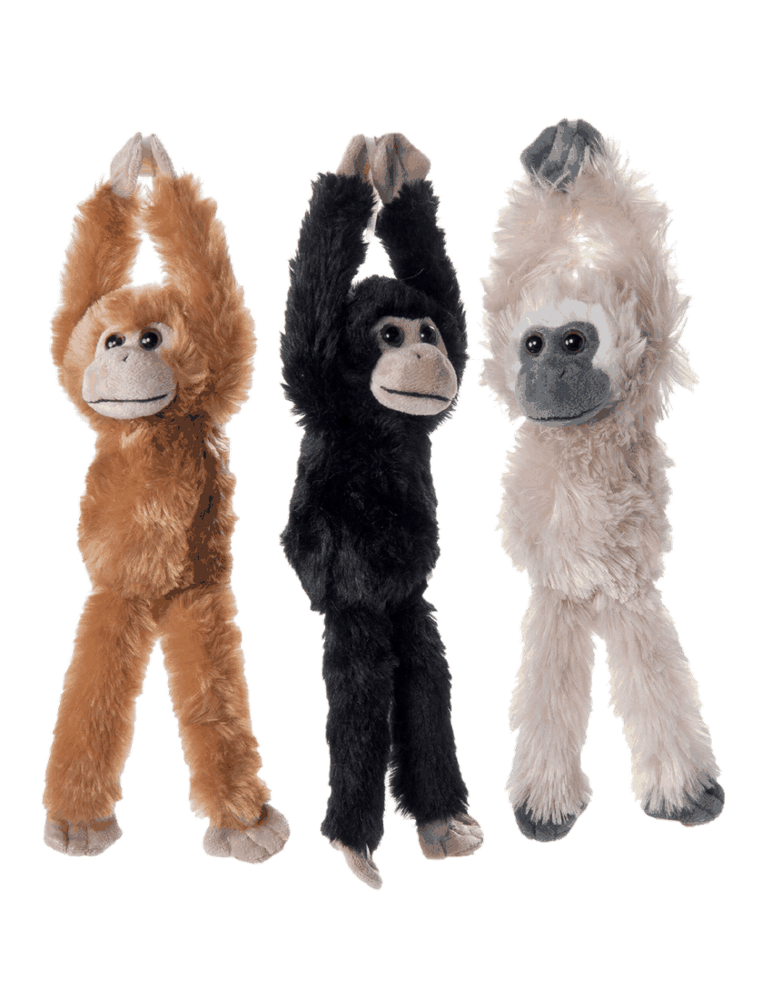
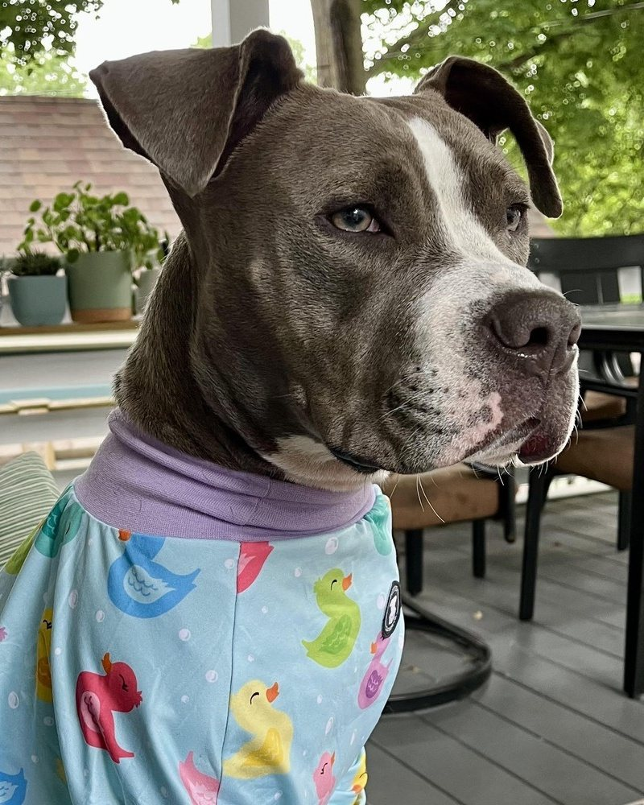
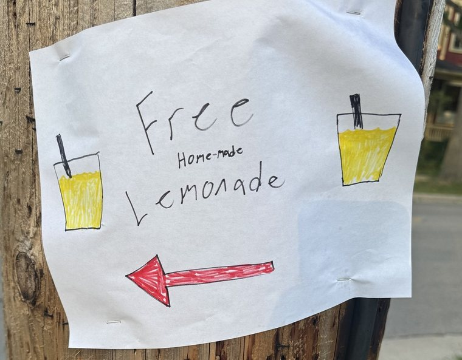
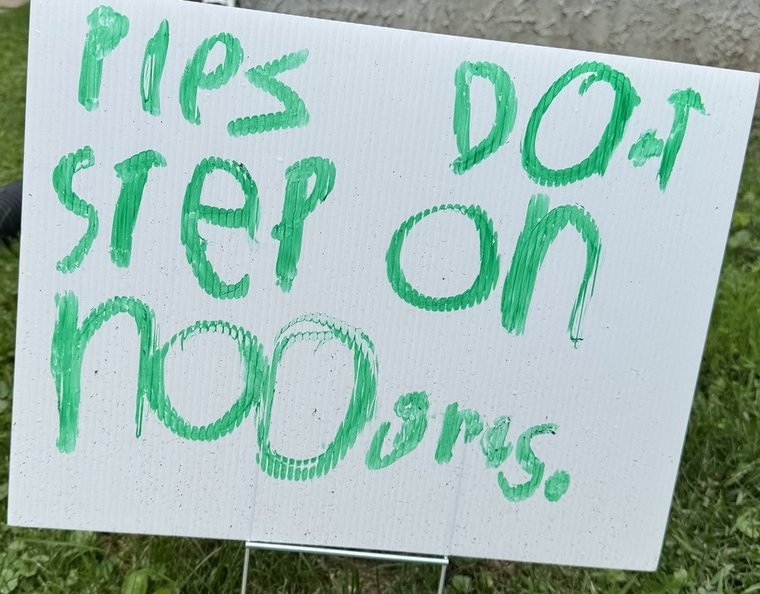
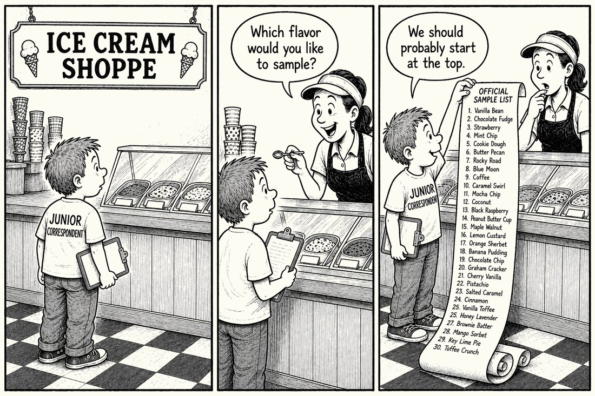
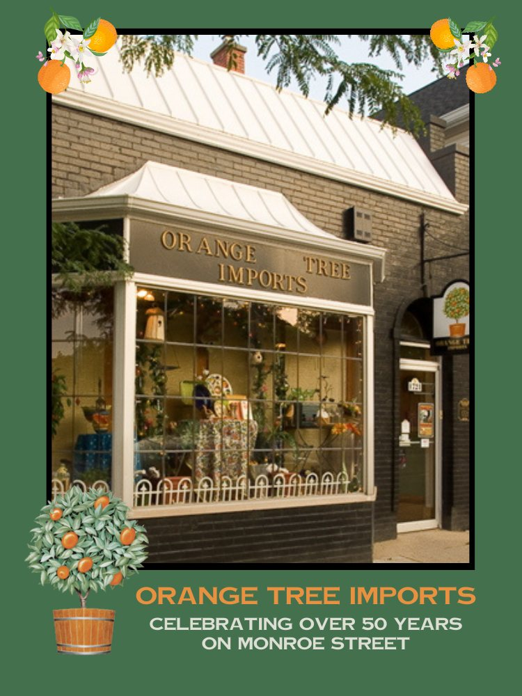

News so hyperlocal, it's amazing anyone takes an interest.
The Tattler and Orange Tree Imports have teamed up and made plans for you.
Join the Monkey Hunt →Local history takes a very strange turn.
In an old home or apartment, some of the building's history is visible right away: the old trim, the strange renovation choices, the pipes that suggest someone once had a plan, or at least access to tools. Other parts are harder to uncover. That's one of the pleasures of living in an old house. You never really know what pieces of its history are going to find you.
Or knock on the door.
In this case, it was a man ringing the doorbell and asking if he could come inside and see the house.
This stranger, we quickly learned, was named David.
David told us that he had grown up in our house decades earlier. Now in his 60s, he had stopped by as he was passing through in the hopes to see his childhood home.
David knew enough about the house to establish that he was either telling the truth or had committed himself to an extremely specific form of fraud. He remembered layouts and house quirks. Which felt validating enough.
So we invited him in.
We explored the house while he told us what he remembered, including that his family had somehow gotten a full-sized pool table down the narrow basement stairs. We're still not sure how they pulled that off.
Then while walking around the house, David casually mentioned the monkey. "Oh yeah, and that's where the monkey was."
"I'm sorry what, what?" I said, confirming I heard him correctly.
One Saturday morning, when David thought he was perhaps 8, he glanced out the sunroom window. To his complete surprise, there was a monkey a few feet from his face looking back at him. It was just sitting in the tree, making eye contact. He knew the story sounded wild. A monkey had appeared outside his window. He saw it. The monkey saw him.
This is the kind of information you receive politely. But your mind quickly replays the seemingly insufficient front door vetting from an hour earlier.
David had a theory about how the monkey got there, but corroborating it meant some investigative journalism and a trip through Wisconsin Historical Society records. Finally, we assumed, this would be our chance to pull microfiche. It took one simple website search.
In August 1960, Madison experienced a primate jailbreak. Thirty-eight monkeys escaped from the Vilas Zoo. Most were recaptured quickly. Others made their way into the surrounding area, including trees outside ordinary Madison homes. And amazingly, the last monkeys were not captured until December 5.
For four months, Madison had an unresolved monkey situation.
This childhood memory was not merely a family legend. It appears to be one small piece of real Madison history. He should have led with this story on our home tour. Or perhaps he was right to save it for the end of his visit.
For many houses, this would be the strangest visitor story.
Ours had another appointment on the calendar.
During the Monroe Street reconstruction, when the sidewalk and a good stretch of road disappeared for a season, the neighborhood developed a kind of improvised circulation system. Pedestrians, commuters, and the occasional confused cyclist began taking whatever routes made sense in the moment. This sometimes meant cutting across front yards with the quiet confidence of people who had temporarily believed that all land was public infrastructure for them to use.
One afternoon just after construction wrapped, while the memory of that collective boundary confusion was still fresh, an absolutely stuffed vanload of people climbed out of a white 15-passenger van in front of our house.
They were an eclectic group of varying ages, the kind you try to place in a category: a neighbor's relatives, contractors, a wrong turn from campus.
We went back to whatever we were doing inside the house, until the volume of conversation outside made me look a second time.
The vanload of strangers was now in the front yard, feet from the window.
They had not knocked. They did not appear to be lost. Quirky things happen when you live near campus, so I chalked it up to that.
But then after a bit of time, they just stayed. So now this created a category problem. They were not visitors, because visitors knock. And they were not passersby, because passersby keep passing by.
While I watched them, trying to decide whether I should go outside and greet all 50 of them, they arranged themselves in front of the house and began posing for photos. Then after several pictures, they climbed back into the van and drove off.
It is a perfectly nice house, but not the sort of place a vanload of strangers would normally stop to commemorate.
Later that evening while still trying to make sense of it, I mentioned the daily happenings to a neighbor, who I learned had also seen them.
"Oh my GOD," she said. "That was the cult that used to live in your house!"
Truly, a perfect neighbor sentence.
I suppose this answered my underlying question about the visitors. Unfortunately, it created several more.
For reasons I cannot explain, I stood there and asked no follow-up questions.
Instead, the sentence simply joined the house's growing history, which we are still unpacking.
Maybe that's the nature of living in an old house or building. You don't get the whole story. You get fragments. Most of the house's life remains unknown. But every once in a while, a piece of it finds its way back to the door.■

Apparently, publishing a story about the great monkey escape of 1960 was not enough. We have now contributed to a second incident!!
Throughout October, 38 stuffed monkeys will be hiding in business windows around the neighborhood as part of The Great Monkey Escape of 2026, presented by The Monroe Street Tattler + Orange Tree Imports.
Each monkey has a name. When you spot one, write down the monkey's name and the business where you found it on the Official Monkey Tracking Form below. Find 10, fill in your name and contact information, and return the completed paper form to Orange Tree Imports by October 31. Then we draw names.
There are 38 monkeys and 38 winners, which means every monkey will eventually leave its hiding place and go home with someone new. Winners will be drawn at random, so this is not a race. All ages are welcome. One entry per participant.
Bring this completed form to Orange Tree Imports by October 31 to be entered in the Great Monkey Adoption Drawing. 38 winners. 38 monkeys. 38 new homes.
Print the official tracking form, or cut it out of the paper. Completed forms go to Orange Tree Imports by October 31.
Hunt details and printable form →Local pit bull accepts responsibility for pajamas and ongoing distrust of umbrellas

Lola arrived on Monroe Street about 18 months ago after being picked up as a stray in Janesville. She was roughly a year old, skinny, boogery and looking for a family.
Today she is 2½, considerably more comfortable and, according to her household, "a m'f'ing baby."
The evidence is substantial.
Lola demands kisses on the nose. She sleeps the first half of the night in her crate, described as a "blanket fort," before relocating around 2 a.m. to the human bed, where she burrows under the covers. Below 60 degrees, she prefers pajamas.
When her people work on puzzles at the kitchen table, Lola becomes unhappy unless her own chair, a brown velvet 1970s barrel chair known as the "Grogu Pod," is pulled up alongside them.
Lola also enjoys Brewers games, riding through town with one elbow hanging out the passenger window, and her boyfriend Franklin of Terry Place.
Her list of enemies is shorter. At present, it consists mainly of umbrellas, which she regards as deeply suspicious and possibly up to something.
Some people give Lola extra room on the sidewalk. Others immediately want to meet her.
Her family says living with her has taught them not to treat either reaction as the whole story. Lola is exceptionally affectionate with people, but they are deliberate about introductions to other dogs. Rather than letting dogs meet nose-to-nose on a sidewalk, they prefer parallel walks, gradually closing the distance while everyone stays calm.
"We need to be intentional about every interaction with other dogs," her family said.
Lola now has four dog friends introduced this way.
Squirrels and rabbits, however, should not interpret this statement as an offer of peace.
Given the opportunity to respond directly to allegations that she is intimidating, Lola acknowledged her formidable appearance but emphasized her record with humans.
Finally, the Tattler asked the question on which the entire investigation ultimately rests:
Is Lola a good girl?
Lola answered yes and submitted an extensive list of character witnesses, including neighborhood children, a crossing guard, several nearby dogs, Grandma Linda, a man who once stopped specifically to rub her, and Franklin, her aforementioned boyfriend.
The Tattler has not independently contacted all witnesses.■
Two recent neighborhood signs suggest local children are increasingly willing to bypass traditional media and communicate directly with the public.
One promoted lemonade. Another attempted to protect new grass.
Two recent neighborhood signs suggest local children are increasingly willing to bypass traditional media and communicate directly with the public.
One promoted lemonade. Another attempted to protect new grass.


Part I of the Tattler's two-part librarian exposé
For years, they've seen everything. Now they're talking.
We sat down with Steve, a 17-year Madison Public Library veteran, to ask about life behind the desk at Monroe Street Library. He did not seem particularly concerned about what we might ask.
"I've been asked just about everything you can think of," he said. "Nothing could shock me anymore."
So we started with the books and looked for where he draws the line.
Steve is unshaken by overdue books. Returning one a day late earns a guilt level of exactly 0.0. "Some folks apologize to assuage their guilt. I'm telling you, it's ok. I do it too. Life marches on unaware."
Dog-ear a page in your own book and Steve's position is: "you do you." Dog-ear a library book and the situation changes. "Borderline unforgivable," he said. "These are shared items."
Then we found the sensitive area: underlining, highlighting or annotating a library book is Steve's personal librarian hill to die on. Do it, he says, and you should feel "more than a little bad."
What patrons leave inside the books is where things get more interesting.
He once found an insurance payout check for more than $5,000 tucked inside a returned book. On the subject of what people leave behind, he used the interview to issue one direct neighborhood plea:
"Please don't use toilet paper as a bookmark."
The books, it turns out, are only part of the story. The questions that arrive at the library desk can be just as unpredictable.
One patron wanted to know, "Why can't I ever find a ripe watermelon?" Another question has followed him with rather more persistence. Asked to name the one he has answered approximately 14,000 times, Steve produced it immediately: "Do you have tax forms?"
Curiously, he did not actually tell the Tattler whether the library has tax forms.
Life at the library, we learned, is not all watermelon inquiries and questionable bookmarks. Steve offered a glimpse into what Monroe Street residents are actually asking for. Travel guides come up more often here than at other locations, cookbooks remain reliably popular, and two titles are currently drawing particular attention: Whistler by Ann Patchett and The Correspondent by Virginia Evans.
Of course, bringing new materials onto the shelves eventually raises a more delicate question: what has to go?
Steve, it turns out, enjoys making that call. Collection management is one of his favorite parts of the job, which means deciding when books, movies and CDs have outlived their usefulness or are in rough enough condition that they need to make way for something new.
Not everything at the library is about what stays on the shelves. Steve says younger visitors have their own favorites: the "reading buddies," weighted stuffed animals that kids love, and he especially enjoys hearing the interactions children have with them.
Steve does see room for improvement. He wishes Monroe Street had a more accessible programming room, a fact neighborhood improvement enthusiasts may wish to quietly file away for future reference.
On which section of the library deserves more love, he was considerably more direct:
"Bathrooms."
He did not elaborate.
While the facilities may remain under review, Steve's opinion of the neighborhood is much more settled.
"Folks here are friendly and clearly love their little library on Monroe St."
The Tattler can confirm at least one piece of supporting evidence. Monroe Street Library has carved out shelf space for this very newspaper, an editorial decision we continue to regard as both generous and slightly astonishing.
He wishes more people knew about the "so many cool databases" available through the library website. And when he talks about the most heartwarming part of the job, it is simpler: getting someone out the door with a book or movie they wanted, he says, "feels great."
After 17 years with Madison Public Library, Steve offered one sentence he wishes people understood about librarians:
"We don't know everything but we are willing to try."
Which left the Tattler with one final question: Is a hot dog a sandwich?
"Not in my culinary world."
After everything else he had revealed, it was perhaps the clearest answer of the interview.
Next month: Part II. Another librarian agrees to talk. What they reveal may change how you see the library forever.
Residents can once again safely open the neighborhood listserv without seeing it.
A reader has reported an apparent increase in horn activity at Monroe and Harrison on Friday afternoons.
No empirical data supports the claim.
The Tattler considers eyewitness reporting at least as important as actual evidence and has opened a preliminary investigation.
Readers noticing repeat honkers, unusually aggressive toots, or Thursday behaving suspiciously like Friday are asked to report them to the Tattletale Line at MonroeStreetTattler@gmail.com.
Residents remain divided on the question of outdoor cats.
Supporters cite enrichment, tradition, and the difficulty of explaining property lines to a cat. Opponents cite birds, nests, garden beds, and the broader concern that one household's beloved pet may also serve as neighborhood wildlife policy.
The Tattler takes no position, except to note that all sides appear confident.
Routine trip for eggs becomes crisis of personal morality.
A routine stop at Trader Joe's became an ethical reckoning Thursday when a local shopper, who had reportedly delayed buying eggs for several days to avoid "dealing with all this again," was finally forced to confront the refrigerated wall.
Sources say the shopper stood motionless for several minutes, weighing exactly how much chicken suffering he was willing to tolerate to save $2, and whether the extra money was even buying meaningfully better welfare in the first place.
After comparing labels, prices and increasingly cheerful illustrations of chickens standing in grass, he selected a mid-priced carton that appeared to offer the optimal balance of animal welfare and not paying $9 for eggs.
Even the $8.99 option failed to provide total peace of mind, as the shopper admitted he could no longer remember whether "cage-free" meant "good," "less bad," or merely "not technically in a cage."
"I just wanted eggs," he said.

Dear Editor,
I notice that in your September issue, Chocolate Shoppe received your highest ice cream honor and also purchased an advertisement. I am not accusing anyone of anything. I am simply noting it.
A Careful Reader
The Commission thanks the reader for noting it. Both facts are correct. Chocolate Shoppe received the Tattler 2026 Double Scoop Award, and Chocolate Shoppe purchased a quarter page in the same issue.
The award was determined in a Chocolate Shoppe dining room, over roughly two hours and 448 tasting spoons, at a time when this paper had no advertising to sell and no reason to believe it ever would. The Tattler's entire revenue that month was a single unsolicited reader contribution, which was spent on trophies.
The award was given for allowing 56 flavors to be tasted in one sitting without visible complaint, which remains the most patience any business has shown this publication.
The Tattler's independence is, as always, largely theoretical. In this instance it is also intact.
The Commission welcomes continued scrutiny, and reminds readers that advertising rates are available on request.
"Just read my first issue cover-to-cover. I can't remember the last time I enjoyed the news so much!"
"Just discovered this fabulous newspaper! Looking forward to the next issue. The humor is very appreciated."
Thank you to both of you. This is exactly the kind of reckless encouragement that keeps the presses running. Thank you for supporting the Tattler.
Tattler Crossword No. 2 runs on the back page of the printed issue. Download the paper above to play it, or print the puzzle on its own.
Tattler Crossword No. 1
| P | A | I | G | E | D | A | D | A | ||
| U | I | S | B | L | E | U | ||||
| M | P | R | E | C | A | L | L | E | D | |
| P | E | C | O | N | R | |||||
| T | E | F | L | O | N | O | D | E | ||
| A | R | R | E | L | I | V | E | Y | ||
| C | I | A | M | E | E | T | U | P | ||
| A | M | R | M | T | S | |||||
| C | U | L | D | E | S | A | C | H | I | |
| I | S | E | E | D | C | P | ||||
| A | D | A | M | T | O | R | C | H |
Thank you to everyone who has emailed, donated, sent in a tip, requested and displayed a yard sign, nominated a pet, suggested something ridiculous, or otherwise helped turn this into something much larger than we had any business expecting.
What started as a small neighborhood experiment has somehow become a real little community project, which is both very touching and, operationally, a little concerning.
Thank you for reading, sharing copies, writing back, and treating the Tattler like it belongs here.
It's much more fun because of all of you, and we're genuinely very grateful.

The Monroe Street Tattler is printed monthly-ish and distributed free throughout the surrounding neighborhoods.
Subscribe, read past issues, chip in, host a stack or run an ad at MonroeStreetTattler.com.
Tips, neighborhood lore and unexplained local developments to MonroeStreetTattler@gmail.com. Story ideas are welcome and submissions need not be polished. This month's cover story even came from a reader. Know a pet the Tattler should feature? Send nominations to the same address.